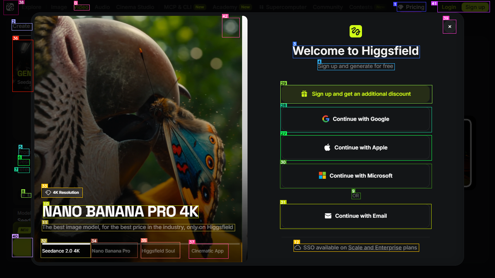
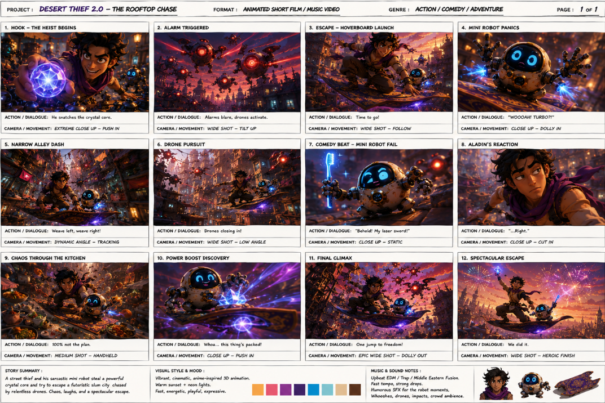
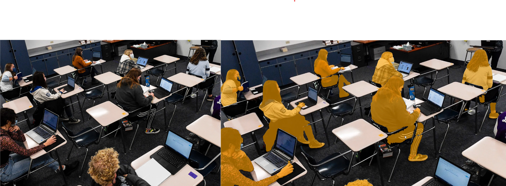
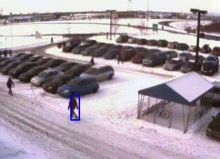
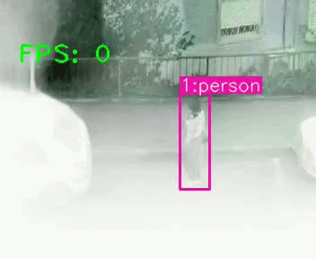
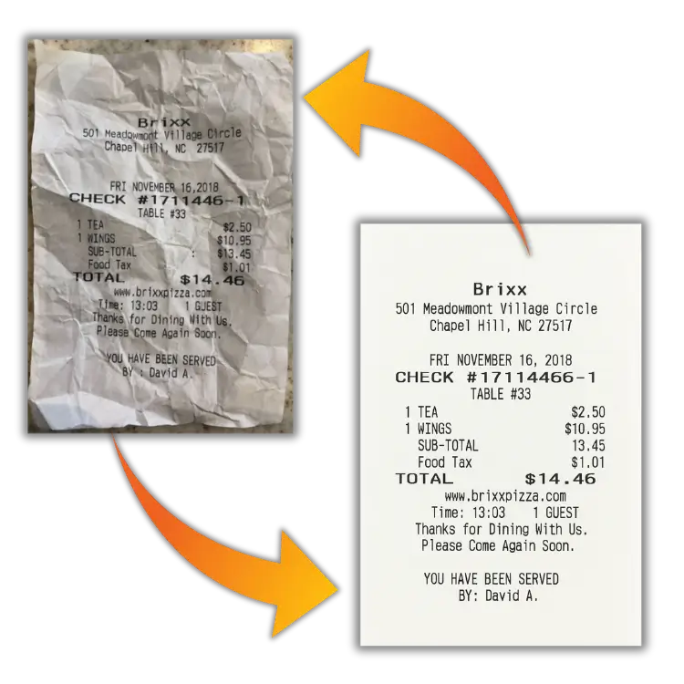
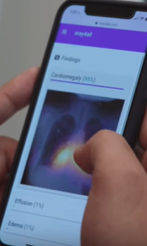

01
Vision Heavy GUI Auth Agent
LLM-driven browser automation using Playwright + OmniParser, with self-correcting execution, safety guardrails, and human-in-the-loop fallbacks.
AI Engineer · Agentic AI · LLM Systems · Computer Vision
Building AI systems that reason, act, and operate in production.
I work on agentic AI, LLM systems, multi-agent platforms, and deep-learning systems — from research and experimentation to production. I also build useful web apps over weekends, ship them publicly on X, and share what I learn as an active open-source contributor in X.com's indie-hacking communities.
Recent: Founding AI Engineer @Adopt AI
Built a collaborative platform for marketing teams to engage and decide which version of storyboard is better to go for AI video production.
Building a production multi-agent platform from the ground up for 6+ global enterprise clients — orchestration, tool calling, evaluation, and execution infrastructure. Led a team of 8 engineers.
Agentic systems, deep-learning pipelines, and the weekend web apps I build and publish in public.

LLM-driven browser automation using Playwright + OmniParser, with self-correcting execution, safety guardrails, and human-in-the-loop fallbacks.

A collaborative image-editing workflow for storyboards — multiple creators shaping and iterating on frames together in real time.

3D scene estimation from monocular soccer broadcasts — novel videogame-derived datasets via GPU cycle alteration, a faster pipeline for monocular depth generation, and Detectron + OpenPose skeletal tracking.

One-shot interactive segmentation: an end-to-end pipeline spanning prompt input, object detection, and pixel-level segmentation for image editing.

YOLOv5 + DeepSORT and OpenCV trackers benchmarked head-to-head with quantitative accuracy metrics for real-time scenarios.

Synthetic haze dataset creation and validation of state-of-the-art trackers for autonomous vehicles and UAVs operating in degraded visibility.

Reconstruction of old, crushed, or broken documents using modified GAN weights — built on a custom dataset (none existed publicly) and a customized conditional GAN architecture.

A Flask web app with a CNN that classifies chest X-rays as Viral Pneumonia, Bacterial Pneumonia, or Normal — with the infected region highlighted.
A quarantine-era backend that maps two self-reported symptoms to five likely diseases, ranked by severity, using an ANN.
Benchmarked YOLOv7, SORT, and SiamBAN under synthetic haze degradation.
Faster pipeline for monocular depth generation of soccer players, presented at the 2023 ICDAIC conference.
Deep-learning classification of chest radiographs.
I'm an AI engineer focused on building intelligent systems that operate reliably in the real world. My work spans agentic AI, LLM systems, computer vision, and deep learning — across production multi-agent platforms, enterprise automation, multimodal systems, and published research.
I enjoy working at the boundary between research and engineering: taking ideas that work in a notebook and turning them into systems people can actually use. Outside work, I build small AI products and engineering experiments, ship them publicly on X, and contribute to X.com's indie-hacking and open-source communities.
CGPA 8.86/10 · Specialization: Deep Learning, Computer Vision & Advanced AI Algorithms.
CGPA 8.67/10 · Gold Medalist (Ranked 1st in Department overall).